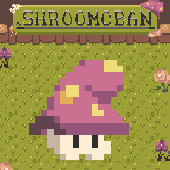

Your Name
Game Developer
About Me
My name is [], and I am a soon-to-be game design graduate student. This page is to showcase my works and portfolio. As of now, I am a generalist in most areas, still trying to find what to specialize in. From my programming portfolio covering AI, procedural generation to gameplay programming, I highlight my approach to each challenge I faced. I’m open to taking on challenges and learning new ways to tackle problems. The art portfolio demonstrates my skill set in modeling and texturing for both 3D and 2D. All the portfolio work throughout this page are assets created by me. I will be covering my concept art and sketches to the final product.
Exp INSTER HERE
Programming Portfolio
Finite State Machine NPC AI
This project is my attempt at using finite state machines to allow NPCs to have different behavioural states to create a convincing free-thinking NPC, taking inspiration from Craig Reynolds's Boids programme to use basic rules to influence the NPCs' movement.
Area Diversity City Procedural Generation

Here I created a procedural generation tool that utilizes Perlin noise algorithms combined with layering techniques, to create area diversity allowing the user to have more control on parameters in different zones.
Shroomoban
Shroomoban is a 2D puzzle game inspired by Sokoban, a game where the objective is to push boxes into the correct slots, across a grid-like movement system.
Art Portfolio
Brass Bolt Caverns Mining VR Game

During this project i was apart of a small team, and I was tasksed with specializing in the creation of the 3D environment, this included the whole hub area and all buildings and props that will be located in the hub area.
Pirate Radio: Stealth Raves
Working in a small team we created a 3D Stealth game, taking from and inspired by 90s London Rave Culture
Kitty Table Setup

A valentines themed Game Jam, all the models and programming was created over a span of 3 days.
Game Jam Portfolio


CV
Download my CV:
Download PDF